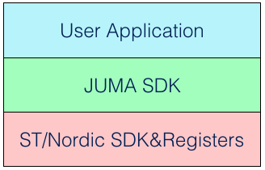

使用说明
系统架构¶
JUMA SDK编程框架将嵌入式程序分成三个层次：

其中：
- 最底层的是芯片原厂提供的开发包和编程接口，如ST、Nordic的SDK及其寄存器编程接口。
- 中间层为JUMA SDK，它整合了低功耗蓝牙(BLE)、外设驱动、算法、功耗管理等组件。整个SDK具有一套统一的编程框架，这体现在任务调度、中断处理、事件回调等方面，使得软件聚合具有一致性。
- 最高层为用户应用层，即，开发者使用SDK开发自己的应用程序。
硬件平台¶
SDK支持nRF51平台和STM32平台：
- nRF51平台：基于Nordic nRF51822芯片的硬件产品，JUMA开发的NOVA、SMP等开发板就属于nRF51平台。
- STM32平台：基于STM32 MCU和BlueNRG(蓝牙收发器)的硬件产品，JUMA开发的Cannon开发板就属于STM32平台。
请根据您手上的开发板，查看相应的开发指南，包括开发环境、API说明、例程等。
嵌入式软件¶
目前，在兼容性问题上，SDK的API尚未兼容nRF51和STM32两个平台，说明如下：
JSENSOR API、BLE主设备 API、USB API是STM32平台特有的API；- nRF51平台不支持上述STM32平台特有的API，其他的API都予以支持；
移动端工具¶
为了方便调试嵌入式代码，JUMA制作了移动端的BLE调试助手，该APP可以和设备之间发送或接收原始蓝牙数据。现在您可以从iOS或者Android应用宝APP市场直接下载，或者自行编译源码。
1. APP下载安装：¶
- iOS版本: BLE调试助手_AppStore
- Android版本: BLE调试助手_应用宝
2. 源码编译安装：¶
- iOS版本: BLE调试助手_iOS_Github
- Android版本: BLE调试助手_Android_Github